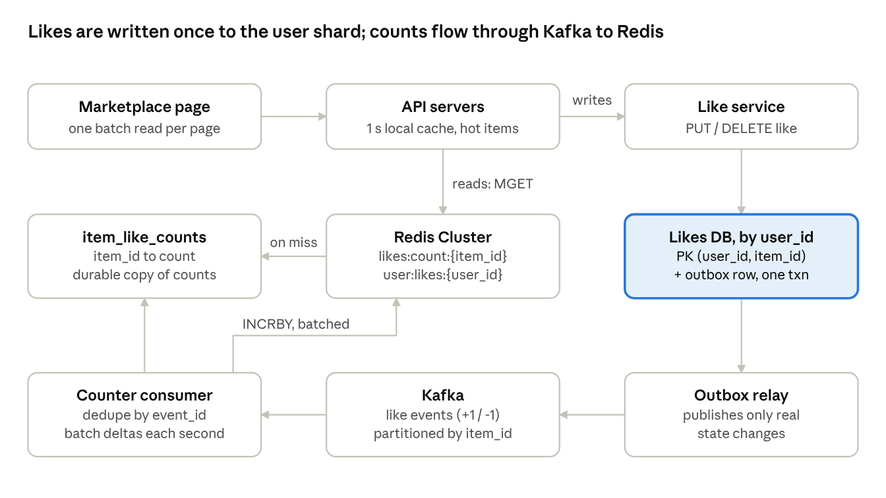

Understanding the problem
Roblox's marketplace has millions of items (hats, outfits, experiences), and users can favorite or like them. Every item page shows its like count, and every user sees whether they've liked it. It looks like a toy problem, but the numbers make it hard: reads dwarf writes, a viral item gets hammered, and the interviewer wants exact counts, not "about 12K". Be specific: name concrete Redis keys and database queries.
Functional requirements
Core:
A user can like or unlike an item.
Anyone can see an item's total like count.
A user can see whether they've liked an item (the filled-in heart).
A user can list the items they've liked.
Below the line: recommendations based on likes, notifying the creator, trending lists, spam and bot detection.
Non-functional requirements
Read-heavy: about 1M reads/s of counts and liked-state.
Write volume: about 100K like/unlike writes/s at peak.
Exact counts, though a second or two of lag before the count updates is fine. Ask the interviewer; it shapes the whole design.
Idempotent: liking twice is still one like; unlike only works if you had liked it.
Hot items: one viral item may get a large share of all writes.
Low read latency: under ~50 ms.
The set-up
Core entities
Like: the fact that user U likes item I. The pair (user_id, item_id) is unique.
ItemLikeCount: the total for an item.
Item, User: owned by other services; we only store their IDs.
API
PUT /items/{item_id}/like → 200 { "liked": true, "count": 12045 }
DELETE /items/{item_id}/like → 200 { "liked": false, "count": 12044 }
GET /items/{item_id}/likes → 200 { "count": 12045, "liked_by_me": true }
GET /users/me/likes?cursor=… → 200 { "items": […], "next_cursor": "…" }
POST /items/likes:batchGet { "item_ids": […] } → counts + liked_by_me for a page of itemsPoint out that PUT and DELETE are naturally idempotent: liking twice leaves you in the same state, which is exactly the semantics we want. A POST /like toggle would not be safe to retry. The batch endpoint matters because a marketplace page shows 30–60 items at once; one call per item would multiply read traffic.
High-level design
1. Like and unlike
A Like service writes to a likes table, the source of truth. At 100K writes/s you need a store that scales writes horizontally: a sharded SQL database (Vitess/MySQL) or a wide-column store (Cassandra/ScyllaDB). Either works; the key design is what matters:
CREATE TABLE likes (
user_id BIGINT,
item_id BIGINT,
created_at TIMESTAMP,
PRIMARY KEY (user_id, item_id) -- shard by user_id
);
-- like: idempotent because of the primary key
INSERT INTO likes (user_id, item_id, created_at) VALUES (?, ?, now())
ON CONFLICT DO NOTHING; -- 1 row inserted = a new like
-- unlike
DELETE FROM likes WHERE user_id = ? AND item_id = ?; -- 1 row deleted = a real unlikeThe rows affected tell you whether the state actually changed. Only a real change should move the count. That's the core of idempotency here: liking twice inserts once, and the counter moves once.
2. Show the count
Naively, SELECT COUNT(*) FROM likes WHERE item_id = ? on every page view. At 1M reads/s, and with likes sharded by user, that's a scatter across every shard. Instead, keep a counts table keyed by item, plus a cache:
CREATE TABLE item_like_counts (item_id BIGINT PRIMARY KEY, count BIGINT);Redis key:
likes:count:{item_id}→ integer.Reads:
GET likes:count:{item_id}(orMGETfor a page of items). On a miss, readitem_like_countsand set the key.
When a like changes state, the service publishes an event (item_id, +1 or -1) to Kafka, partitioned by item_id. A counter consumer applies the deltas to item_like_counts and to Redis (INCRBY likes:count:{item_id} 1). This takes counter writes off the request path.
3. Has this user liked it?
The likes table is sharded by user_id, so "did U like I" is a single primary-key lookup on one shard. For a page of 50 items, it's one query on one shard: SELECT item_id FROM likes WHERE user_id = ? AND item_id IN (…). Cache the user's recent likes in a Redis set, user:likes:{user_id}, and check with SMISMEMBER.
4. List my liked items
Same shard, same table: SELECT item_id FROM likes WHERE user_id = ? ORDER BY created_at DESC LIMIT 50, with a secondary index on (user_id, created_at) and cursor pagination on created_at.
Potential deep dives
1. Keeping the count exact
Bad solution: increment the count in the request, separately from the like. Insert the like row, then UPDATE item_like_counts SET count = count + 1. If the service crashes between the two, the count drifts forever. A client retry that re-runs the increment double-counts.
Good solution: one transaction. Insert the like and increment the count in the same transaction. Exact, but only if likes and counts live on the same shard, and they don't (likes by user, counts by item). A cross-shard transaction at 100K writes/s is too slow.
Great solution: count only real changes, through an outbox. In one local transaction on the user's shard, insert the like row and an outbox row (item_id, +1, event_id). A relay publishes outbox rows to Kafka (partitioned by item_id). The counter consumer applies each delta once, using the event_id to skip duplicates (store the last applied offset per partition, or a processed-events set with a TTL). Because only a real state change (1 row inserted or deleted) creates an outbox row, the count is exact. A nightly job recomputes a sample of counts from the likes table and corrects any drift.
2. The hot item
A viral item gets 50K likes a second. One Redis key and one row for its count become the bottleneck.
Bad: INCR on one row in the database for every like. That's row-lock contention.
Good: the counter consumer batches: it collects deltas for, say, 1 second per item and applies one INCRBY likes:count:{item_id} 3412 and one SQL update. 50K writes become one per second.
Great: batching, plus sharded counters for the hottest items: split the count into N sub-keys, likes:count:{item_id}:{0..15}. Writers pick a random sub-key; readers sum them (MGET of 16 keys), or a background job keeps a cached total. Only apply sharding to items detected as hot, so normal items stay simple. On the read side, a viral item's count is the same for everyone, so cache it in a local in-memory cache on each API server for ~1 second. That absorbs most of the 1M reads/s before they ever reach Redis.
3. Read path at 1M/s
Item pages call the batch endpoint once per page:
MGET likes:count:{id1} … likes:count:{id50}.Redis Cluster shards keys by hash; a few dozen nodes handle 1M+ simple reads/s.
"Liked by me" uses the user's own shard and the
user:likes:{user_id}set, so it scales with users, not items.If Redis misses, fall back to
item_like_counts, with request coalescing (one database read per key at a time) so a cold popular key doesn't stampede the database.
4. Abuse: a bot likes and unlikes in a loop
Rate-limit per user (e.g. 10 like changes per item per minute), and because only real state changes emit events, the loop can't inflate the count. It only adds load, which the rate limit caps.
Final design

A like writes the (user, item) row and an outbox row on the user's shard in one transaction. The relay publishes only real changes to Kafka by item; the counter consumer dedupes, batches, and updates Redis and the counts table. Reads hit a 1-second local cache, then Redis, then the counts table on a miss.
What's expected at each level
Mid-level. A likes table with a unique (user, item) key, a count cached in Redis, and an understanding that reads dominate.
Senior. Idempotency via the primary key and rows-affected. A separate counts store, updated asynchronously through Kafka, and why (shards don't line up). An exact-count story (outbox + dedupe + reconciliation). Concrete Redis keys and SQL. A hot-item plan: batching, sharded counters, local caching. Batch reads for pages.
Staff+. All of the above, plus: multi-region writes (where a user's likes live, how counts merge across regions), the cost of exactness vs approximate counting, and capacity numbers for Redis and Kafka.
Return To Homepage